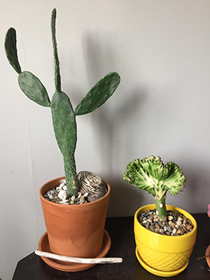

Caring for succulents and cacti is relatively easy compared to other plant types! They make the perfect plant for those who have a lot going on.
Firstly, make sure the pot you're using has drainage holes. Cacti can survive in the driest of weather so the less moister the better! Fill your pot with a mixture of pebbles, coarse sand and pumice (or perlite) The growing season for cacti is from middle of March to the end of September. Make sure to water your cacti thoroughly - once a week - during this time. On the off season, water once every two weeks but make sure the soil is COMPLETELY dry before doing so.